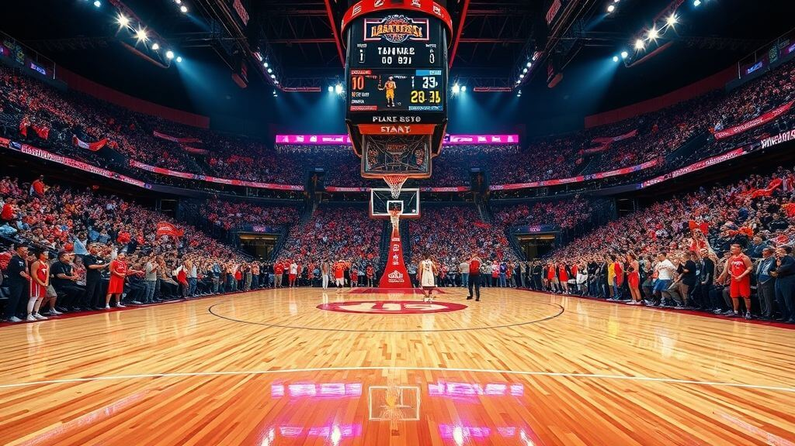

Fantasy Basketball
Dive into the dynamic world of fantasy basketball, where strategy meets skill. Draft your dream team, analyze stats, and make real-time decisions to outplay competitors. From selecting sharpshooters to lockdown defenders, Fantasy Slam empowers you to showcase your basketball expertise. This is more than just a game—it’s your court to dominate.
Why Fantasy Basketball Stands Out
Fantasy basketball redefines how you experience the sport. On Fantasy Slam, you build your ideal team, make tactical moves, and compete with basketball fans across the globe. Whether you follow the NBA, EuroLeague, or college hoops, fantasy basketball amplifies the thrill of every game.
Our platform offers in-depth player analytics, live game tracking, and real-time adjustments to elevate your strategy. It’s all about sharp thinking, calculated risks, and your passion for basketball.
Join NowSkill and Strategy Over Luck
At Fantasy Slam, your success depends on your basketball knowledge and strategic decisions. From crafting a well-rounded roster to analyzing player matchups, every move counts.
This isn’t a game of chance—it’s a competition of skill. Your victories are a reflection of your expertise, planning, and ability to stay one step ahead.
Understanding the Game Format
Fantasy basketball offers multiple scoring formats, including Points, Head-to-Head, and Roto. Here’s a breakdown:
Head-to-Head: Compete weekly against another manager by comparing stats in categories like points, rebounds, and assists. Winning more categories earns you the matchup.
Points: Score based on player performances, with preset values assigned to stats like +2 for a made basket or +5 for a block.
Roto: Teams earn points based on their rankings in each statistical category. The highest cumulative score wins the league.
Additional options include Keeper Leagues for long-term player management and Daily Fantasy for quick challenges. Choose your preferred format and jump in.
Fantasy Basketball Tips and Strategies
To excel in fantasy basketball, preparation is key. Here are expert tips:
- Understand Scoring: Familiarize yourself with the scoring rules and prioritize players accordingly.
- Draft Smart: Balance your roster with scorers, rebounders, and defensive specialists.
- Monitor Player Health: Keep an eye on injuries to avoid setbacks.
- Stay Informed: Follow live games and make strategic adjustments when needed.
- Use Boosters: Enhance your gameplay with tools like the Clutch Shot or Defensive Wall.
How to Get Started
Draft Your Squad
Select top players to build a competitive lineup tailored to your strategy.
Analyze Matchups
Dive into player stats and game conditions to optimize your choices.
Follow Live Action
Stay updated with live scores and adjust your lineup as needed.
Compete and Win
Participate in leagues, employ your strategies, and aim for victory.
Fantasy Basketball Rules
1. Team Formation
To participate in fantasy basketball, you need to build a roster of players from real-life teams participating in the game. Your team must include a mix of positions to ensure a well-rounded lineup:
- 1-2 Guards: Players who excel in scoring, assists, and ball handling.
- 2-3 Forwards: Versatile players contributing in scoring, rebounding, and defense.
- 1-2 Centers: Dominant players in the paint, focusing on rebounds and blocks.
- Bench Players: Additional players to rotate and substitute strategically.
2. Scoring System
Points are earned based on your players' real-life performance. Here’s the breakdown of scoring:
-
Offensive Points:
- 1 point for each field goal made.
- 3 points for each three-pointer made.
- 1 point for each free throw made.
-
Defensive Points:
- 3 points for each rebound.
- 2 points for each steal.
- 3 points for each block.
-
Teamwork Points:
- 2 points for each assist.
- 5 points for a double-double (10+ in two stat categories).
- 10 points for a triple-double (10+ in three stat categories).
-
Penalties:
- -1 point for each turnover.
- -2 points for fouling out.
3. Captain and Vice-Captain
Choosing your captain and vice-captain is crucial for maximizing points. The captain earns 2x points, while the vice-captain earns 1.5x points. Make your picks based on player form, matchups, and potential impact on the game.
4. Substitutions and Transfers
Team adjustments are allowed before the start of the match. Some leagues may also offer mid-game substitutions or transfers, depending on their specific rules. Use this feature strategically to stay ahead of your competition.